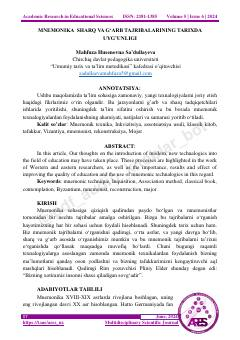

MSMnemonik texnologiyalarning ta'limdagi o'rni va tarixiy tajribalar tahlili.
Ushbu maqola mnemonik texnologiyalarning ta'lim sifatini oshirishdagi ahamiyatini Sharq va G'arb tadqiqotchilari tajribalari asosida tahlil qiladi. Unda tarixiy shaxslarning xotira qobiliyatlari va zamonaviy o'quv jarayonida mnemonik usullardan foydalanish samaradorligi yoritilgan.